about
media
support
| 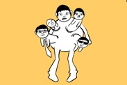 | Protocol of Person and Social Syntax:
Lesson One Animation dir. Walter Lowe (University of Michigan) Few people have the joyful determination embodied by Betty Dwyer as she uses her paintbrush and positive attitude to take on a world of adversity. |
| 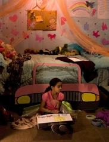 | Jemila's Tale Narrative dir. Christina Bryant (Ithaca College) A young black girl discovers there are no princesses like her in fairytales, so she decides to write her own as she struggles to communicate with her classmates and father after the loss of her mother. |
| 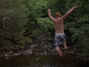 | Hindsight Experimental Documentary dir. Sean Hanley (Emerson College) A poetic documentary portrait of the seasonal rituals of a small town in New England. Shot over the course of one year, the film acts as a visual and aural eulogy for the place the filmmaker once called home. |
| 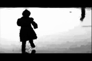 | Baptism Experimental dir. Michelle Byron and Jacob Mertens (UNC Wilmington) A found footage experimental film that explores the abstract beauty of baptism, a process in which we return to a state of creation when all life was unified. |
| 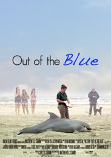 | Out of the Blue Documentary dir. Matthew Stamm (UNC Wilmington) his documentary sheds light on the unsettling occurrence of beached dolphins and the people who work to rehabilitate them. |
| 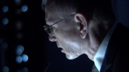 | The Sierra Project Narrative dir. Gabriel de Urioste (New York University) When scientist Sam Newman's latest attempt to copy the neural network of the human brain into a computer fails, he must come to terms with his personal sacrifices and the strange consequences of his work. |
| 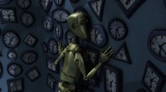 | Dissonance Animation dir. Shreyasi Das (Rochester Inst. of Technology) "There is music in imperfection." A 3D animated film about a robot in a room full of clocks, trying to maintain order. |
| 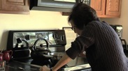 | Body of Work Documentary dir. Gabby Follett (UNC Wilmington) Few people have the joyful determination embodied by Dwyer as she uses her paintbrush and positive attitude to take on a world of adversity. |
| 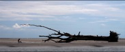 | Simulacra Experimental Narrative dir. Sumie Garcia A woman experiences a series of surreal yet beautiful dream situations in a dream, involving a stranger and a mirror box that holds memories. |
| 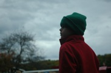 | Calling Occupants of Interplanetary Craft Narrative dir. Talia Alberts (Northwestern University) In the time of E.T. and Star Wars, a young boy who dreams of extraterrestrials gets the surprise of his life when an unexpected visitor crash lands in his backyard. |
| 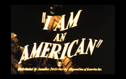 | I Am An American Experimental dir. Kyle Rodgers (University of Hartford) A 16mm found footage film exploring the lives of everyday Americans. |
| 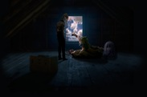 | The Birds Upstairs Animated Narrative dir. Christopher Jarvis (New York University) Frustrated attempts to conceive children overwhelm the lives of an aristocratic, avian couple in the early nineteenth century. |
| 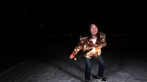 | Hypnocused Pocused Narrative dir. Victor Tadashi (Columbia University) A casual hypnotism goes bananas as three men become trapped in the limbo of their subconsciousness in this dark comedy. |
| 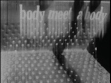 | Man Is Always On the Stairs Between the
Pleats of Matter and the Field of the Soul Experimental dir. Jing Niu (University of North Carolina Chapel Hill) A child climbs stairs to find a vast field inhabited by humans, whose roaming, naked bodies appear and disappear within the dark night and the shadows of tall hay stacks. |
 |
The Elect Documentary dir. Dan Moore & Erin Zacek (University of Notre Dame) The Elect is a short cinéma vérité-style documentary that follows members of the controversial Westboro Baptist Church as they carry out their everyday lives. |
| 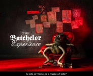 | The Batchelor Experience Animation dir. Fiona Dalwood (University of Melbourne) In a world that rewards obedience, discipline, self-restraint, and temperance, it's easy to forget that sometimes it just feels good to be bad. |
| Coup Sauvage Narrative dir. Stéphane Moukarzel (L'INIS) After a traumatic accident, a mother's grief alters her perception of her surroundings in this cerebral film. |
|
| 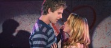 | Incest! The Musical Narrative dir. Grant Reed (Chapman University) Alex is class president. Katie is valedictorian. They're perfect for each other. They're also twin brother and sister. This year's prom is going to be interesting... |
 |
 |
 |
 |
 |
 |
 |

| Akakombo
– Rob Migrin University of Michigan |
| Bedford
Park Boulevard – Felix Thompson New York University |
| Carried
Away – Corinne Colgan & Eric Keto Ithaca College |
| Still
Here – Alex Camilleri Vassar College |
| Zlata
Rybka (The Goldfish) – Jacob Mendel Film and TV School of the Academy of Performing Arts |
Copyright 2011 VISIONS Film Festival and Conference